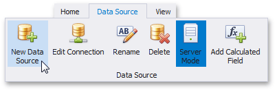
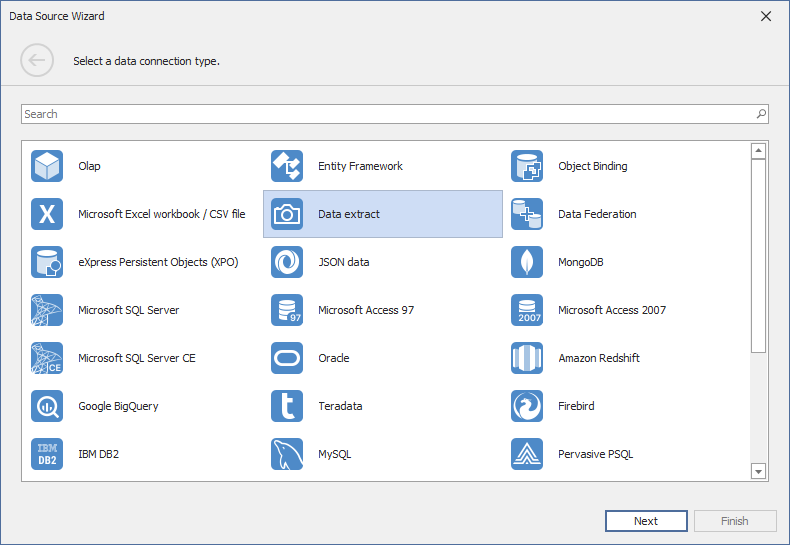
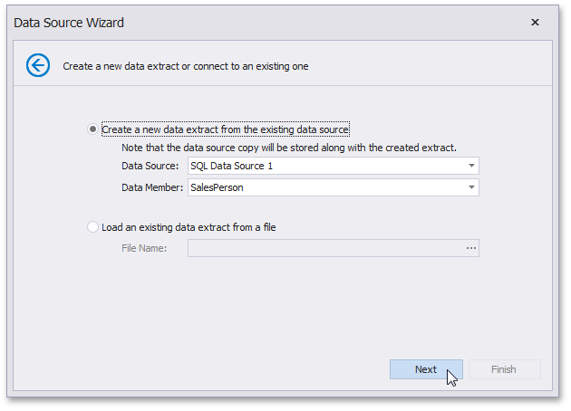

Binding to Extract Data Sources
The Dashboard Designer allows you to create a data extract that is a compressed snapshot of data obtained from the existing data source. This data is saved to a local file and can be updated from the original data source at any time.
Note
Note that data extracts cannot be created for the OLAP data sources.
To create a new data extract from the existing data source, perform the following steps.
Click the New Data Source button in the Data Source ribbon tab.

On the first page of the invoked Data Source Wizard dialog, select Data extract and click Next.

On the next page, select whether to create a new data extract or establish a connection to an existing one.

- To create a new data extract, select Create a new data extract from the existing data source and specify the required Data Source and Data Member. Click Next.
- To establish a connection to an existing data extract, select Load an existing data extract from a file and locate the required *.dat file. Click Finish.
(Conditional) The next page only appears if you are creating the data extract based on the Entity Framework or Object data sources, and allows you to select the required fields.

On the next page, you can specify the filter used to extract data. To learn how to specify the filter criteria, see Filter Data via the Filter Editor.

You can also limit the number of extracted rows by enabling the Limit rows to extract option and specifying the required number of rows. Click Next.
Note
Use the Preview button to see the data that will be placed into the resulting data extract.
(Conditional) The next page only appears if the original data source contains parameters (for instance, the SQL query is filtered using a dashboard parameter).

On the final page, specify a path to the file that will contain the resulting data extract.

Click Finish. This creates the data extract and displays its fields in the Data Source Browser. You can use this data extract as a regular data source.